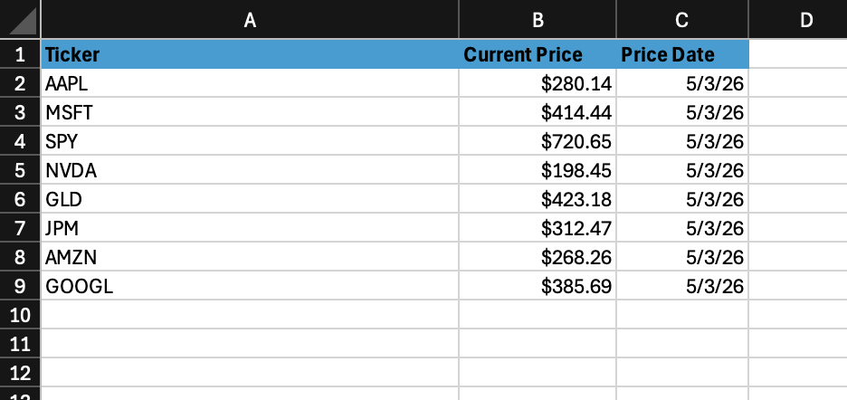
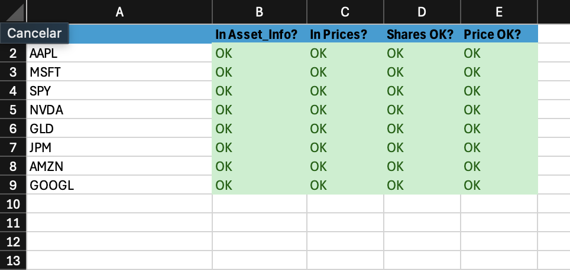

Overview
What this project does
Financial Dashboard is an Excel-based portfolio analysis workbook. It records investment transactions, connects them to asset and price data, calculates current holdings and performance, validates the results, and presents the final numbers in a dashboard built for quick review.
The problem
Portfolio information is often scattered across trades, prices, classifications, and manual calculations, making performance hard to review with confidence.
The purpose
This workbook centralizes the portfolio workflow so a user can move from raw activity to reliable summary metrics without rebuilding calculations every time.
The output
The final dashboard shows portfolio value, total gain/loss, return percentage, realized and unrealized gain/loss, and allocation charts.
The value
It makes the portfolio easier to understand, audit, and present by separating inputs, calculations, checks, summaries, and dashboard visuals.
How it works
From raw transactions to a finished dashboard
The workbook is organized as a step-by-step model. Each sheet has a clear role, and each layer feeds the next one.
1. Transactions
Buy and sell activity is entered by ticker, quantity, price, date, and transaction type.
2. Asset info
Tickers are mapped to company names, sectors, and asset classifications for analysis.
3. Prices
Current market prices are maintained so each position can be valued at today's price.
4. Stock data
Asset and price details are combined into a cleaner lookup layer for the model.
5. Holdings
Transactions are aggregated into current shares, market value, cost basis, gains, and returns.
6. Checks
Reconciliation checks help confirm that source data and summary outputs tie together.
7. Pivot summary
Calculated data is summarized into chart-ready reporting tables.
8. Dashboard
The final worksheet presents headline metrics and charts for portfolio review.
Key features
What the workbook includes
Performance metrics
Total portfolio value, total gain/loss, realized gain/loss, unrealized gain/loss, and return percentage.
Allocation analysis
Charts show allocation by sector and by individual stock.
Position-level detail
The holdings sheet calculates shares, market value, cost basis, and ticker-level returns.
Model validation
The checks sheet helps identify calculation or reconciliation issues before the dashboard is used.
Tech stack
Tools used and why they matter
Microsoft Excel
Used for the workbook, formulas, tables, charts, dashboard layout, and financial model structure.
Excel formulas
Used for lookups, aggregation, holdings calculations, gain/loss logic, and validation checks.
HTML and CSS
Used to create this static project page and present the workbook clearly in a browser.
GitHub
Used to host the workbook, documentation, screenshots, and project page files.
Example
A real portfolio review workflow
A user enters trades for tickers such as AAPL, MSFT, NVDA, SPY, and GOOGL. The workbook combines those transactions with asset information and current prices, then calculates each position's current value and performance.
In the current dashboard example, the portfolio is valued at $65,337.24 with a total gain/loss of $11,697.24 and a 21.81% return. The dashboard also shows which stocks and sectors represent the largest parts of the portfolio.
Project structure
What is included in the repository
workbook/
Contains the Excel file with the full portfolio model and dashboard.
assets/screenshots/
Contains screenshot files used by the README and this web page.
Screenshots/
Contains a top-level copy of the workbook screenshots for direct browsing in GitHub.
README and site files
Explain the project and provide a static project page through HTML and CSS.
How to use
Simple usage flow
Open the workbook in Excel, update transactions, confirm ticker information, refresh prices, review holdings, check the validation sheet, and use the dashboard as the final summary view. The static page can be opened in a browser to present the project visually.
Skills demonstrated
Resume-relevant strengths shown by this project
Financial modeling
Built calculations for market value, cost basis, realized gains, unrealized gains, and returns.
Dashboard design
Created a clear reporting view with executive metrics and portfolio allocation visuals.
Data organization
Separated raw inputs, lookup data, calculations, checks, summaries, and presentation layers.
Project communication
Documented the workbook clearly so an unfamiliar reader can understand the purpose and workflow.
Future improvements
Where the project could go next
Automated prices
Connect the workbook to a market data source so prices can refresh with less manual entry.
Historical tracking
Add portfolio value over time, monthly returns, and benchmark comparison.
More return detail
Add dividend tracking, total return calculations, and allocation target analysis.
Published site
Publish the static project page through GitHub Pages for easier sharing.
Screenshots
Workbook views
These screenshots show the final dashboard and the supporting sheets that feed the analysis.



